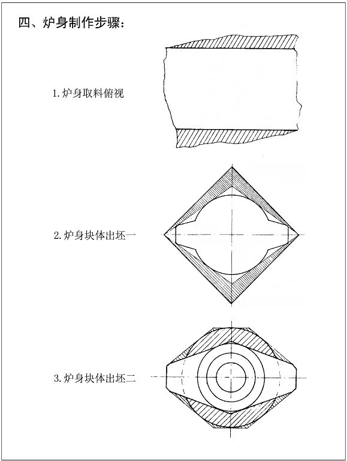
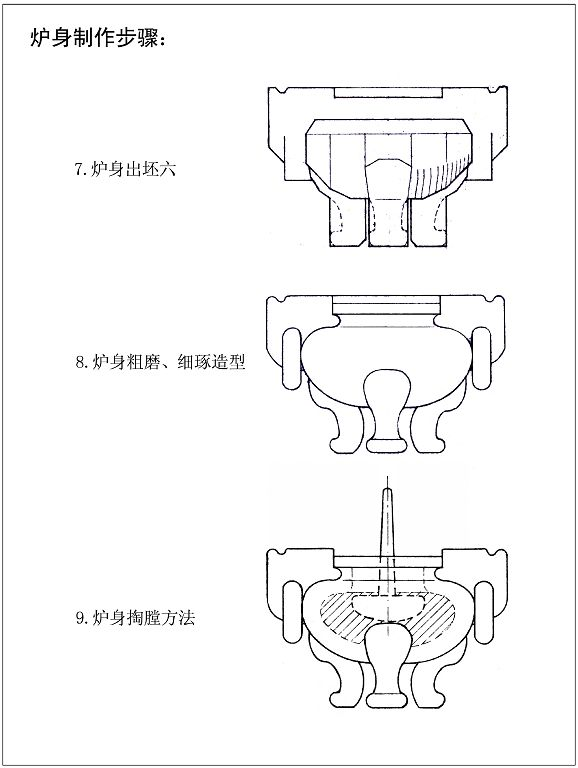
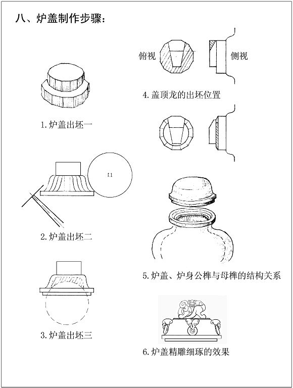
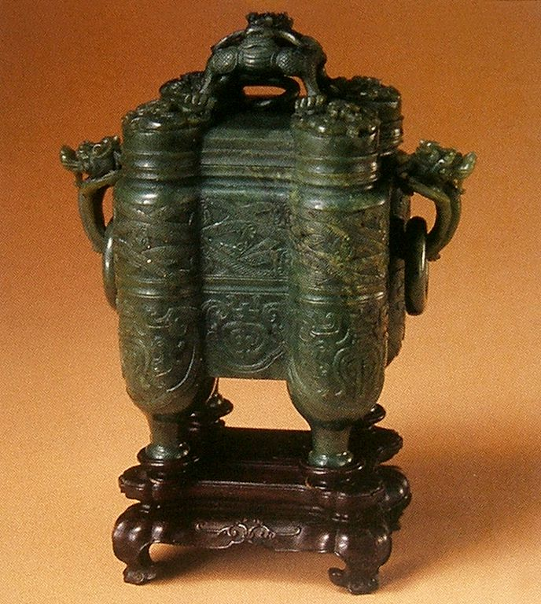
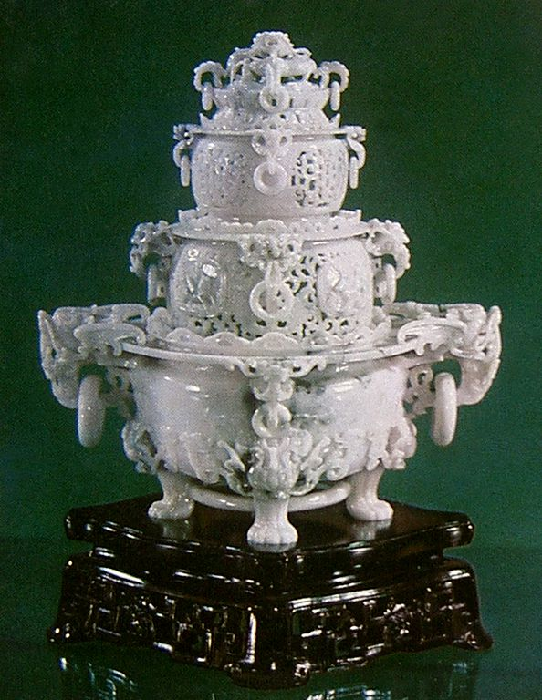
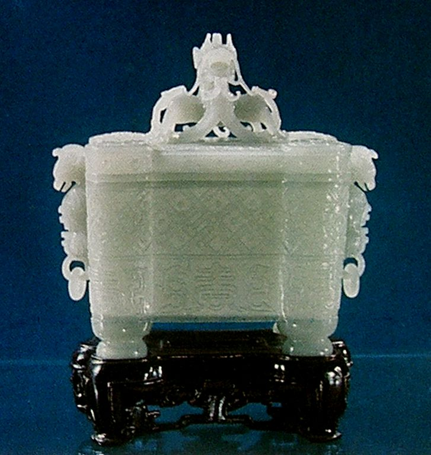
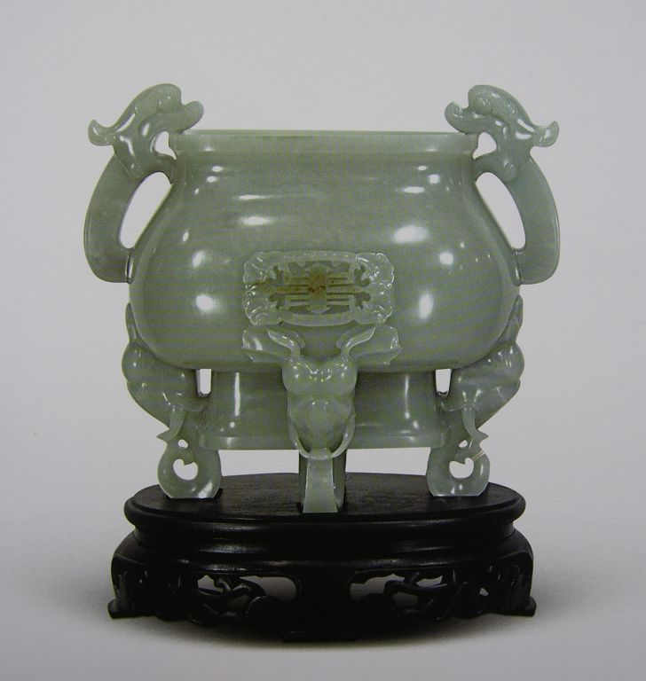
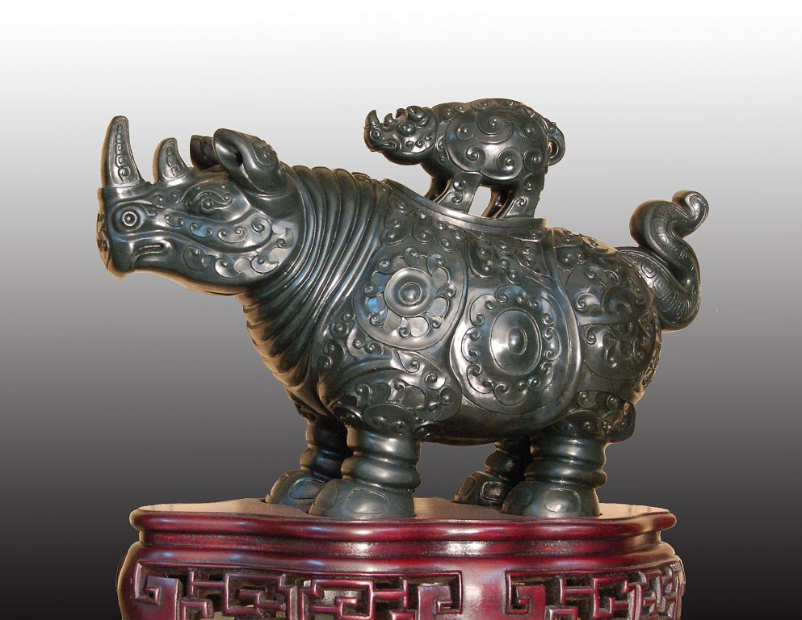

项目课程(6) 玉雕三足炉设计与制作
玉器在自身的发展过程中不断的吸收了其它的艺术形式，玉炉这一类产品大部分借鉴青铜器的造型和纹样，特别是四方鼎、三足炉、提梁卣，还有爵、觚、樽等造型渐渐出现了玉器的身影，然而这些玉器虽然没有青铜器之狞厉，然而从它的器型和纹饰上来看却有了凝重而典雅、雄健而优美，既保留了青铜器的雄浑霸气又增添了一份温润和柔美，表现了玉炉特有的精神气质。 学习目标： 1. 熟悉三足炉的造型特点 2. 掌握三足炉的设计规律 3. 掌握三足炉的工艺过程 教学要求： 通过本章三足炉玉器工艺的实训课程，使学员能基本掌握三足炉的基本工艺，进一步灵活掌握不同工具的使用方法，熟练掌握圆雕、浮雕、透雕、线刻、等琢玉技巧；同时学会运用美的原理，对器型比例、浑然造型、疏密布纹、玲珑施艺等进行合理的经营和琢磨。 实践项目： 三足炉设计和制作 一、三足炉的因料设计 三足炉的样式多种多样，玉三足炉的设计，包括它的样式和造型风格关键还是由玉料的造型和作者的审美来决定的。 1.玉料选取 三足炉的玉料选择，要块度大，料形整体，瑕疵少，色泽匀的玉料作为三足炉的理想材料，由于三足炉是对称、规则的器型，瑕疵不能象制作天然瓶那样容易去掉，因此，对于玉料的选择要仔细察看，是否有深度的色斑和暗裂的存在，以免在制作过程中产生不可去净瑕疵的现象，使玉炉造成美中不足的遗憾。 2.合理用料 炉身的用料应该把好的玉料放在正面和上部，炉盖和炉身最好是一块原料上分割而成，这样色泽较为统一，在开料时把好炉身和炉盖的比例，尽量用足玉料。 3.勾线定位 首先要把炉身的上口平面和三足的平面从四周来看要达到一样的高度，即成平行线，然后用画十字线的方式找出上口和底部的中心点，以此为标准，自上而下、掌握比例、勾画墨线，其中包括炉身的俯视图和底部三足的定位，两则吞头（虎头）、炉圈的定位以及各部分的勾画。  图7-1-1 清代 翡翠 活环龙首耳三足盖炉图7-1-2 清乾隆 白玉雕双耳三足炉 图7-1-1 清代 翡翠 活环龙首耳三足盖炉图7-1-2 清乾隆 白玉雕双耳三足炉二、三足炉的造型特点 玉器三足炉是仿古炉瓶中典型的产品，其造型是从古代陶器、青铜器香炉演变而来，造型对称、庄重、大方、朴实。 1.三足炉的结构部件 ① 炉身：主体造型圆润饱满，有的赋有纹饰。炉身采用圆雕的形式，表面薄浮雕纹饰的雕琢俗称“了面”。 ② 吞头：似乎是炉的双肩，对称的龙头或虎头，连接着流畅、卷曲的香草，有了装饰的韵味和玲珑透雕的工艺。 ③ 炉盖：盖上装饰有狮子或盘龙，雕琢整体而通透。 ④ 三足：健壮有力的圆雕，三足鼎立，稳健中有了屹立的气势；足跟和炉身的结合处装饰有高浮雕的兽面纹，增强了玉炉的威武和神气。 ⑤ 炉圈：和吞头相连、垂挂的耳圈。有的在炉盖上也有三个炉圈，位置和三足上下对齐。炉圈给庄重的玉炉增添了一分灵动之感。 2.三足炉的整体造型 三足炉的造型基本有以上五个部分组成，各个部分的造型都有各自的特点，既有主体的几何器型，又有装饰动物、植物等形象组合而成， 而且琢磨形式又有圆雕、透雕、高浮雕、薄浮雕等，因此，在整体造型关系上有着严谨的结构和一定的比例，使多样的造型统一在整体、优雅的三足炉器型之中。 三足炉的造型形式较多，有高三足炉、矮三足炉，又有植物造型，有动物造型，有几何造型等，三足炉玉器的总体形式美感呈现出古朴、端庄、典雅的风格（图7-2-1、图7-2-2、图7-2-3）。  图7-2-1 清中期 青金石兽耳活环炉 图7-2-1 清中期 青金石兽耳活环炉 图7-2-2 清代 和阗碧玉莲纹三足炉 图7-2-2 清代 和阗碧玉莲纹三足炉 图7-2-3 白玉 白玉炉（天工奖最佳工艺奖）作者：宋鸣放 图7-2-3 白玉 白玉炉（天工奖最佳工艺奖）作者：宋鸣放
三、三足炉的工艺流程 由于三足炉上的纹饰多样，结构复杂，因此，学习、雕琢三足炉可以在琢玉技巧上得到全面的训练，一方面是对前阶段的琢玉技巧进行综合的训练，另一方面也是为今后的玉器设计和制作打下了扎实的基础。 (同时参照图稿7-3-1至7-3-10)  图7-3-1 图7-3-1 图7-3-2 图7-3-2 图7-3-3 图7-3-3图7-3-4
 图7-3-5 图7-3-5图7-3-6
 图7-3-7 图7-3-7 图7-3-8 图7-3-8 图7-3-9 图7-3-9图7-3-11
1.块体岀坯 块体岀坯即细砂岀坯阶段：是扦砣（现代一般不使用）及斩砣的工艺，关乎于炉身、炉肩、炉圈、炉足的块体工艺程序： ① 先将炉身斩成菱形，其次斩出炉口，然后再斩出炉脚的三角形。 ② 斩出两个吞头、炉圈的高低大小。 ③ 将炉肩的菱形削圆，两边要晓得相等，吞头延伸的香草部分要少削一点。 ④ 逐一将三个脚分别斩成六角形。 ⑤ 斩出炉腹，使它成为锅底或半皮球状。 ⑥ 斩出三足的凹档。 斩砣工艺注意：每斩一个地方，先要懂得它的形状，斩时正确，既不能少，更不能多；在斩时还要考虑到斩砣是圆的，防止中间过深。 2.形体粗磨 形体粗磨即“粗砂岀坯”阶段：掏砣、冲砣、压砣、扎眼等工艺。 ① 炉身粗磨： 用粗砂（现代用新工具）把炉身外围磨的浑圆、规整，两肩对称。用粗砂掏磨炉身膛内，内壁要磨得厚薄均匀，与外部造型一致。 ② 吞头（两肩立体虎头）、炉圈粗磨： 吞头是耳，炉圈是环，二者是一体的，因此，在工艺的处理上要一起考虑。先后用大压砣、小压砣把吞头、炉圈磨平、磨圆，两边对称，再用扎眼把吞头和炉圈交界的“三角地”磨干净，然后打骑马眼，这样可以用细铅丝穿过，再两手轻轻地来回提拉，同时加以细砂和水，在拉磨的过程中，要胆大心细，渐渐的使吞头和炉圈分离（现代可以用钻石粉尖针挑磨开吞头和炉圈）。分离的炉圈是带着棱角的，再用扎眼施以扒、塞、刨等工艺，使其圆润、饱满。切记，扎眼不能比缝隙小，以免在旋转中扎眼滑入缝隙中，造成炉圈崩断。 ③ 香草粗磨： 香草作为吞头的延伸连接着炉身，同时又起着装饰作用，粗磨时使用压砣、扎眼、杠棒等工具磨出它的造型，两边要对称，既要贴切地搭在炉身上，又要有空灵感。 ④ 虎头（三面浮雕）粗磨： 虎头是连接炉身和脚的装饰物，先用大压砣大体磨出老虎头的形状，并使三只位置、大小、高低统一，再用小压砣和扎眼等工具基本琢出脑门、眼睛、鼻子、嘴造型。 ⑤ 炉足粗磨： 先用大压砣将三只足的棱角磨掉，略微弯曲，上粗下细，再用小压砣等工具琢磨出脚跟、腿凹档、脚趾等，同时三足统一有力。 ⑥ 炉盖工艺: 炉盖的造型装饰，炉盖耳朵的装饰主要有灵芝、老虎头、羊头、香草等。炉盖顶上主要有盘龙、云龙、独角龙、香草龙等。 炉盖岀坯：先用斩砣大体斩出炉盖的造型和盖顶上的龙。 炉盖粗磨：再用压砣等工具进一步磨出、磨正炉盖的造型和龙的造型。 ⑦ 炉、盖投嘴口工艺： 此项工艺犹如公榫和母榫的结构，炉身口是母榫，炉盖口是公榫。先用斩砣的斩出圆的 母榫，然后用压砣把母榫磨得圆，并深浅一致，以同样的方法留有余地斩出、磨好公榫，公榫的磨制要非常小心，在磨得过程中要不断的把炉盖试着盖在炉身上，看它是否吻合，当磨到基本吻合时，可以在二者之间加上细砂，用双手使它们不断的转动、碾磨，这样可以使二者更加紧密，投嘴口的工艺要求不动摇、没有缝隙，转动紧密、顺滑。 3.精雕细琢 三足炉的精雕细琢是一项复杂和精到的工艺（了手工艺），由于形体的多变，因此，在工具的使用上是多样的，一般是从大工具用到小工具，也就是从大面积的形体琢磨到小面积的造型。 ① 炉身了手： 炉身了手在粗磨坯体的基础上进一步把圆体的炉身用细砂把它磨得周正、圆润，弧面光挺。 ② 吞头、炉圈了手： 虎吞头的了手要表现出虎头的威猛气势，两眼圆瞪，鼻子饱满，脑门宽厚，牙齿锋利有力，两耳饱满似猫耳；两个炉圈要用细砂细心的磨制以至圆润饱满，特别是琢磨炉圈的内圆更要小心，不要使工具在其内卡住，以免损坏炉圈。 ③ 香草了手： 香草弯曲富有弹性，粗细厚薄匀称一致，香草要施以“淌”的工艺，形成条形的凹弧面，使其富有流动的气韵，结尾的卷子头要从外向内旋转刨圆，并有力度；香草的三角地要用小工具琢磨干净，对于香草的边缘不能有丝毫的损伤，呈现自然、流畅、清爽之感。 ④ 虎头了面： 三面高浮雕的虎头，大小、高低位置相同，虎眼用小扎眼勾圆，磨成半球状似乎镶嵌在里面，二眼相距一个眼球为宜；眉毛根粗，眉梢略细卷成卷子头，收头要圆、略高；双耳根部用扎眼琢磨使其结构清晰，耳轮用小压砣琢磨，使耳尖稍尖，耳洞使用小蛋形工具从耳尖至耳根渐渐加深；鼻子要肥似三瓣大蒜，中间要圆而翘；口宽，龇牙咧嘴，嘴角上翘，凶相中带着笑意。 ⑤ 炉足了手： 先用大压砣将三只脚细细的磨制，使其光挺，再用杠棒圆润的琢磨腿的凹档部位，使三足微弯而挺立；用压砣等工具琢磨出有力而圆润脚跟，用快口压砣琢出脚趾内扣有力。 ⑥ 炉盖、盘龙了手： 用压砣、杠棒等工具把炉盖磨得细腻、圆润、周正。 用多样的工具细致的琢磨出盘龙：盘龙形似壁虎，尾如香草，身如游蛇；腿爪与狮子的腿爪相似；四腿动作有力生动。 炉盖上的盘龙在整体造型上呈半球状，头在正上方，身尾高低起伏的盘曲成圆状，四腿肌肉饱满，脚爪有力的均匀的蹲于四方，盘龙整体造型空灵，在镂雕的过程中，空洞的处理要合理、得当，不要出现对穿的空洞，盘龙的头、身、尾、足的搭配要自然合理，三角地的“多玉”要去净，而又不能脱节，用多种工具细致的琢出磨各局部的造型，使盘龙玲珑剔透而又稳健的蹲在炉盖之上。 三足炉在组合结构上搭配严谨，因此，在工艺处理上要求严格，整体造型要规矩、对称、稳健，比例合度。具体工艺要求：子口的紧密，炉膛的均匀，炉圈的灵活，香草的空灵，盘龙的矫健，吞头、虎头的圆雕和浮雕都必须以工见长，显示高超的琢磨技巧和完美的艺术造型（图7-3-11、图7-3-12）。  图7-3-11 和田墨碧 三足炉 作者：马庆华 图7-3-11 和田墨碧 三足炉 作者：马庆华 图7-3-12 民国 青白玉仿痕都斯坦工双耳四足炉 图7-3-12 民国 青白玉仿痕都斯坦工双耳四足炉玉炉除了三足炉以外还有其它各式各样的款式，造型一般来自于青铜器，有的给予了设计和创新，在造型上给人以古朴典雅、庄重精美、气韵饱满的精神气质（图7-3-13至图7-3-21）。 图7-3-13 清中期和田玉四管式炉、瓶、盒
图7-3-14 翡翠 熏炉 设计：王玉 制作：韩广彬
图7-3-15 白玉 四喜炉 设计：刘纪松 制作：沈建平 宋鸣放
 图7-3-16 黄玉 双羊尊 设计：刘纪松 制作：蒋灿林 周锦 方国全 图7-3-16 黄玉 双羊尊 设计：刘纪松 制作：蒋灿林 周锦 方国全 图7-3-17 青玉 薄胎炉（天工奖银奖） 作者：蒋喜 图7-3-17 青玉 薄胎炉（天工奖银奖） 作者：蒋喜图7-3-18 白玉 炉瓶(神工奖银奖) 设计：陈建和 制作：龚靖云
 图7-3-19 碧玉 羊尊(神工奖金奖) 设计：唐培林 制作：杨达秀 蒋大年 韩永年 图7-3-19 碧玉 羊尊(神工奖金奖) 设计：唐培林 制作：杨达秀 蒋大年 韩永年图7-3-20 碧玉 犀牛尊 设计：唐培林 制作：杨达秀 蒋大年
实训项目和思考练习： 1.设计、制作玉器三足炉1件。 2.学习古代三足炉和现代三足炉以及其它器皿的造型。 3.学习古代器皿玉器的多样纹饰和合理布纹。 |